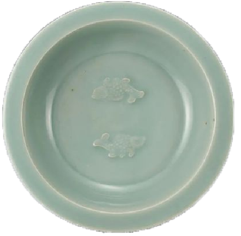

双鱼纹折沿盘
南宋 丽水市处州青瓷博物馆


这件南宋龙泉窑双鱼纹折沿盘，盘高5.7厘米，口径22.6厘米，足径10.5厘米。
圆唇，折沿，弧壁，矮圈足，圈足底部无釉，胎骨坚实，露胎处呈红褐色（俗称朱砂底）。全器施豆青色釉，釉色均匀，釉下开细片，盘外壁绕莲瓣纹一周，内壁有暗刻水纹，盘内底有弦纹两道，底心贴印背向小鱼一对，鱼身线条清晰流畅，技法高超，立体感较强，呈摇头摆尾游动状。
该器造型古朴，釉色莹润，为同类器中之精品。盘内堆贴双鱼装饰在宋代比较常见。